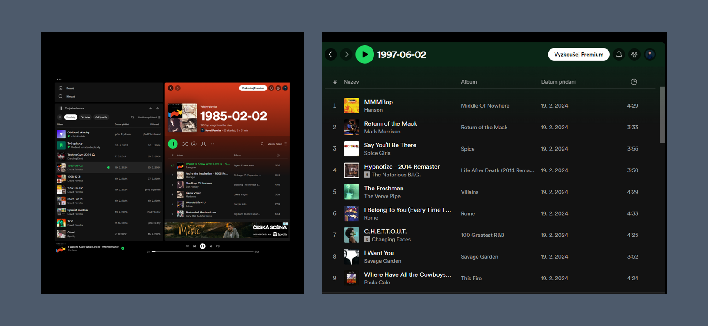

Spotify Playlist Creator
Have you ever wondered what would it be like knowing what were most listened songs while you were born? Or what is the most listened today? This application will allow you to create playlist that will contain songs popular on chosen date. API based combinates various sources of music and helps you create Spotify playlist straight in the Spotify.